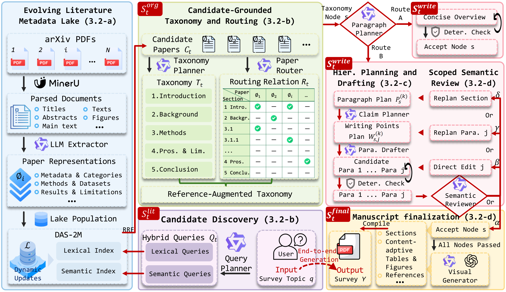
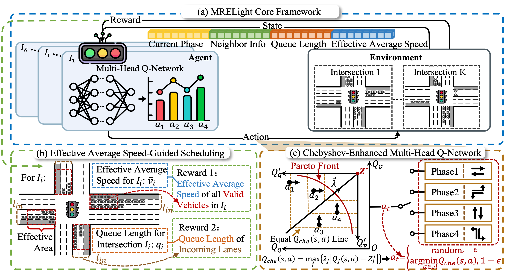

About Me
I am a first-year direct-entry Ph.D. student in the APRIL Lab at the College of Control Science and Engineering, Zhejiang University. I work with Prof. Jiangning Zhang under the supervision of Prof. Yong Liu.
I received my B.Eng. in Automation from Dalian University of Technology (DUT). My average score across required courses was 94.18/100, ranking 3rd out of 162 students (top 1.85%), and I received the National Scholarship. As an undergraduate, I worked with Prof. Xinqi Du on reinforcement learning for traffic signal control.
My current research centers on embodied AI. I hope to do solid, useful work on the road toward AGI—and, in the long run, help build a future where everyone has more freedom to focus on what they genuinely care about. 🌱
Beyond academics and research...
My MBTI is ENTJ-A. I am outgoing, always happy to meet new people, and fond of following the occasional wildly imaginative idea just to see where it leads. Outside the lab, I enjoy working out, running, and playing table tennis and badminton. I have also just started learning tennis—complete beginner here, so I am always up for a game!
I love traveling, especially when the destination involves mountains, lakes, or open landscapes rather than another busy city. I also spend a perhaps unreasonable amount of time exploring and tinkering with good food. 🏃♂️🎾🏔️🍜
Research Interests
- Embodied AI 🤖: Human and robot motion, with a particular interest in motion data, vision-language-action (VLA) models, and World Action Models (WAMs).
- Agentic Systems 🧠: Building complete, reliable workflows in which agents plan, use tools, maintain state, and close the loop through feedback and self-correction.
Publications

TNNLS under review
MRELight: Efficient Deep Reinforcement Learning with Coordinated Multi-Reward Equilibrium for Traffic Signal Control
Selected Awards
2026
- Outstanding Graduate, Dalian University of Technology
2025
- National Scholarship
- First-Class Academic Scholarship, awarded for three consecutive years (2023–2025; top 5%)
2024
- National Second Prize, Contemporary Undergraduate Mathematical Contest in Modeling
- National First Prize, China Robotics and Artificial Intelligence Competition
- National Third Prize, RoboCom Robot Developer Competition
2023
- National First Prize, Chinese Mathematics Competitions for College Students
- Merit Student, Dalian University of Technology
- Spiritual Civilization Scholarship, Dalian University of Technology